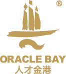

人才金港2009年5月发源于上海陆家嘴金融贸易区，经过多年的探索和发展，业已形成了人才开发和服务的全新运行模式。先后荣获亚太地区最佳人才公共服务平台奖、中国产学研合作促进奖等多个国家级及区域奖项，并入选浦东新区综合配套改革案例。人才金港秉承“1351”理念，集聚智力、科技、金融等方面的优质要素资源，以产业需求为引导，以完善的人才服务体系为载体，为所在地政府、企事业单位提供专业化、定制化、体系化的人才服务。围绕人才引进、人才提升、人才测评、人才配置，搭建了政产学研一体化创新人才公共服务平台，促进了人才资源的深度开发及人才经济模式的建立。
人才金港的成功经验，得到了中共中央组织部的充分肯定。2011年10月,“人才金港”成为中央组织部的教学示范点，通过现场教学的方式向全国推广，目前，“人才金港”已经在上海、南京、苏州、无锡、常州、镇江、盐城、南通、南宁、宁波、蚌埠、西宁、银川等国家重大战略支点城市，建立了十余家符合当地产业特色的人才金港。
随着“智汇云端”人才服务云平台的搭建，“人才金港”正在建立更加专业化、标准化、集成化、数据化的线上、线下人才服务平台，向着人才大数据智慧管理和人才服务的智能化方向发展，并致力于成为人才经济的引领者。、标准规范的服务宗旨，已成为人才公共服务行业中的代表性品牌，也是政府人才工作合作的首选品牌。并努力向着国际化、专业化、标准化、集成化的人才公共服务平台的目标迈进。
2017年大事记
2017年5月20日,上海人才金港企业集团人才测评中心盛大揭牌
2017年5月16日,广西北部湾经济区和东盟开放合作办公室人才金港金服计划启动。
2016年大事记
2016年3月,"人才金港澳大利亚有限公司" 在澳大利亚墨尔本成立
2015年大事记
2015年5月20日,中国西北人才金港盛大开港。
2015年5月7日,南海西宁人才金港盛大开港。
2015年3月26日,常州人才金港盛大开港,并承接常州人力资源服务产业园运营管理
2014年大事记
2014年10月,人才金港作为"中国苏州人力资源服务产业园"战略合作伙伴,承接"中国苏州人力资源服务产业园分园"运营管理
2014年9月,人才金港江苏人力资源服务产业园运营管理成立,标志着人才金港正式进军产业园运营领域。
2014年5月26日,江苏(南京)人才金港盛大开港。
2013年大事记
2013年11月28日,与西宁市委组织部签署共建协议,共建西宁人才金港
2013年5月2日,苏州太湖人才金港盛大开港,启动人才金港长三角总部基地建设(城市创新服务综合体)。
2013年,人才金港分别与南京理工大学、山东大学、上海对外经贸大学等多所名校在各地人才金港开展研究生联合培养高端人才。
2012年大事记
2012年12月15日,在常州举办的第六届中国产学研合作创新大会上,人才金港获得"2012年度中国产学研合作促进奖"。
2012年9月17日,宁波人才金港盛大开港。
2012年8月30日,中国西部(重庆)人才金港盛大开港。
2012年8月28日,北部湾人才金港盛大开港。
2012年5月30日,合芜蚌人才金港盛大开港。
2011年大事记
2011年12月26日,临沂人才金港盛大开港。
2011年12月9日,亚太区人力资源高峰论坛在上海举行,人才金港获得"亚太区最佳人才公共服务平台"。
2011年9月25日,中央组织部"全国市(地、州、盟)和重点行业责任部门贯彻落实人才金港发展规划管理者"培训班在上海人才金港
举行现场教学活动。
2011年7月19日,盐城人才金港盛大开港。
2011年5月19日,无锡物联网人才金港盛大开港。
2010年大事记
2010-01-31 "人才金港"和CIMA(皇家特许管理会计师公会)联合主办"商业精英国际挑战赛中国区总决赛",上海市副市长屠光绍莅临金港参加活动并致辞。
2010-03-10 "人才金港"与上海大学签署工程硕士(项目管理)合作协议。
2010年4月24日 "人才金港"与南京大学联合主办首届"金融人才教育论坛"。
2010-05-17 "人才金港"与荷兰塔领德博(TALENT&PRO)公司签署战略合作协议。
2010-09-01 与AIA签订战略合作协议
2010年10月8日成立陆家嘴金融城培训中心、复旦大学、交通大学、同济大学等五个研究生联合培养项目。
2010-12-15 "人才金港"与上海金融报社签订战略合作协议。
2009年大事记
2009年5月9日上海浦东新区区委常委、副区长严旭视察金港。
2009年5月20日上海浦东新区区组织部部长张华视察金港。
2009年5月26日 "人才金港"在上海浦东新区陆家嘴盛大开港。
2009年6月3日 "人才金港"与SII(英国证券投资协会)签订共建协议。
2009年8月8日 "人才金港"与国际职业风险管理师协会签订战略合作协议。
2009年9月18日 "人才金港"与英国曼切斯特大学商学院中国代表处签订共建协议。
2009年9月21日 "人才金港"与香港证券专业学会签订战略合作协议。
2009年12月28日 "2009海外华人金融高管浦东行"活动成功举行。
2008年大事记
2008年,成立NGO组织"陆家嘴金融城人才发展中心",启动"人才金港"计划,打造国际金融人才高地。
人才金港LOGO:
标志由图形，中英文和数字组成，采用活泼欢快的形体，充满了浓浓的人文和现代气息。
整个造型具有浓郁的现代感也不失中国传统的翰墨之韵，即是图案也似文字，形体由上至下由三个部分组成：
"S"形滚滚的黄浦江水蕴含着雄厚的力量，正穿过历史的长河内的一个崭新的披靡：“一”处的金色的大陆，承载着希望和梦想，有若诺亚方舟，一条中国的东方巨龙，“川”形是最现代的摩天大楼，是最绚丽的人才精英，有继往开来之势，是这片黄金港湾的灵魂精华，三处形体完美结合，犹如无意间的随心一抹，充满灵气，他是象征的图案，更是象形的文字，“兴”“文”更贴切的表达了人才金港的孕育人才之本。
在色彩上采用金色，色彩鲜明，充满力量，同时整体又互相回应，完善统一。
金港使命:
汇聚人才、认知人才、成就人才
金港愿景:
构建人才汇聚的金色港湾，致力于成为人才经济的引领者
金港精神:
创新、整合、共享、开放
金港价值观:
一个金港、一批人、一项事业
1351理念:
搭建一个平台：搭建一个平台：政产学研一体化创新人才公共服务平台
集聚三种资源：政府政策资源、高校教育资源、企业需求资源
构造五种功能：人才引进、孵化、教育、培训、认证
“人才金港” 2010年入选浦东新区综合配套改革案例
2011年度获亚太地区最佳人才公共服务平台奖
2012 年度获中国产学研合作促进奖
2015年度获上海市诚信创建企业荣誉
江苏省人力资源服务行业协会常务理事单位
江苏省人力资源服务业标准化试点单位
中组部人才发展规划管理者培训班现场教学单位
"人才金港"品牌建立于 2009 年，先后获得亚太地区最佳人才公共服务平台奖、中国产学研合作促进奖、大中华区人力资源服务机构 100 强以及“浦东新区综合配套改革案例”等多个地区性奖项。
2011年10月，“人才金港”成为中央组织部的教学示范点，通过现场教学的方式向全国推广。
紧密的政府共建，与各地组织、人社等部门开展合作，成为政府购买人才服务领域第一品牌。部分地方政府以品牌授权的方式展开合作。
致力于打造政产学研一体化人才服务平台。
搭建平台、整合资源、跨区域实施服务。
提供定制化、系统化和模块化的人才开发解决方案，形成完善的人才服务体系。
“智汇云端”人才服务云平台，打造国内一流的人才服务智慧管理平台，为客户提供精准化、集成化、个性化、线上线下联动的人才服务，实现服务的全时空、全地域覆盖。
致力于打造政产学研一体化人才服务平台。
拥有教育培训、人才寻访、产业园运营、IT技术等多个专业化团队。
成员来自人力资源服务、管理咨询、教育培训、产业规划、园区运营、投融资等多个领域。
团队平均年龄 38 岁，硕士以上占比 35%。
团队注重自我学习与提升，富有创新意识和实践经验。